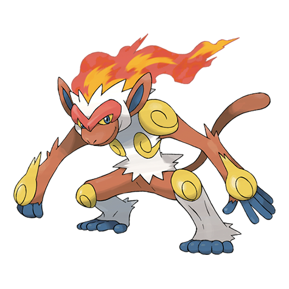
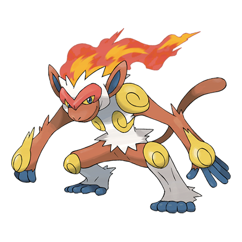

Tipo: fuego | Debilidad: Agua Tierra Roca
Descripción:
Es muy ágil. Antes de dormir apaga la llama del trasero para no provocar un incendio. Los gases de su estómago generan el fuego que le arde en el trasero, el cual disminuye cuando está débil.